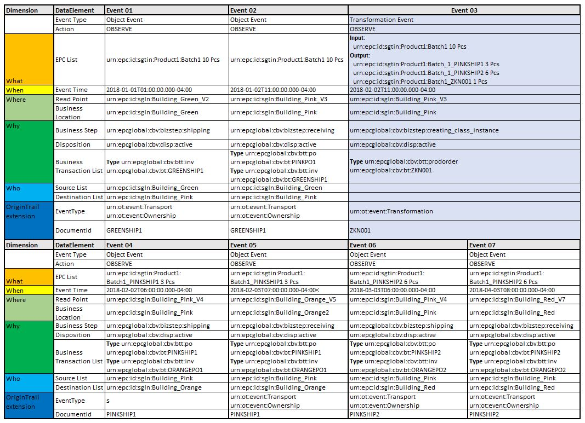
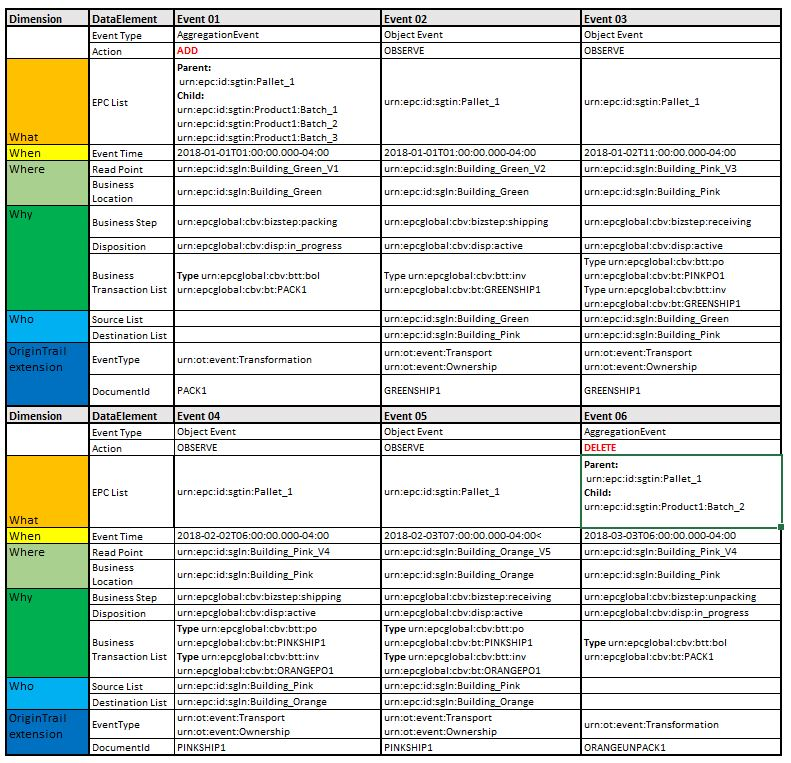

Data Structure Guidelines¶
This page illustrates how to structure data for OriginTrail protocol to utilize data sharing and connectivity functionalities of the Alpha version of the OriginTrail Distributed Network (ODN) as part of Data Layer. It corresponds to attachments and examples that are provided with this file and the documentation on GitHub. The defined structure was developed on the best practices observed over the last several years of experience in implementing transparency solutions within the food supply chain industry, and is based on GS1 standards.
Problem definition¶
OriginTrail is a protocol that enables exchange of standardized data among disparate IT systems in multi organizational environments in a tamper proof way. Therefore, each participant of the exchange should provide their data in a common and standardized format. To utilize the OriginTrail protocol to showcase its full potential, the communication from ERP systems of at least two entities within a supply chain towards ODN needs to be established. The communication is done periodically by sending standardized XML files to the OriginTrail network node, the structure of which will be further explained in this document.
Also, OriginTrail stores and processes data that is generated and received via IoT devices. This data usually is not stored within ERP system. It is processed through designated software on read points into JSON data format and then it is processed further. This type of data can be handled with GS1 EPCIS standard and Web Of Things (WoT) standard. Regardless which standard is used, ODN will process the data and store it in graph database. If structured properly, related data from two data sources (formats) will be interconnected.
The upload of data in the XML format to the OriginTrail protocol node is performed via the web-service endpoint. The process of extracting data from the ERP system, including its periodic forwarding to the OriginTrail node API endpoint is out of the scope of this document. This document focuses on the standardized data structure that data creator nodes can process via their importer.
Types of data structure¶
OriginTrail is primarily focused on GS1 data standards, but other standards will also be supported.
General data structure guidelines
- Research and choose proper standa ODN according to defined use case
- Choose data structure and download sample files
- Edit sample files to match the use case.
- Validate samples.
- Create integration procedure that generates standardized files from data source and sends them to DC node.
GS1 EPCIS structure¶
The goal of EPCIS is to enable disparate applications to create and share visibility event data, both within and across enterprises. Ultimately, this sharing is aimed at enabling users to gain a shared view of physical or digital objects within a relevant business context.
The file structure is based on XML data format. Data structuring is performed with use of official guidelines (EPCIS and CBV). Syntax and XML node structure fully corresponds to GS1 standards and provided XSD schemes. OriginTrail has introduced namespace (urn:ot:* ) for custom identifiers. OriginTrail namespace primarily introduces standardization of attributes that will be used in graph vertexes, while values should be according to GS1 namespace.
EPCIS data structuring guidelines¶
- Research GS1 implementation guide and OriginTrail guidelines.
- Collect the data samples that you want to store on ODN according to defined use case from official implementation guide and our documentation and download XSD schemes.
- Connect XSD scheme and sample file in some advanced XML editing software
- Modify sample file according to your data architecture and validate changes against XSD file.
- Map your data structure with sample file.
- Generate file from your ERP and evaluate the data against XSD file.
- Send file to ODN via API through DC node.
GS1 EPCIS XML File structure¶
The XML file contains three main logical parts document data, master data and visibility events data. All parts of the file must be according to GS1 XSD scheme.
The example XML files, as well as the XSD scheme that can be found here. Example files are organized in several folders. Each folder represents one use case scenario that has several events that are described in details. Scenarios are described below in this document.
We strongly advise use of advanced XML editing software that will verify if your data structure corresponds to XSD scheme that is proposed by GS1 if you want to have full compliance of the data structure.
Document data¶
EPCIS guideline suggests “Standard Business Document Header” SBDH standard for description of the document data. This part of data is in EPCIS Header part of the file. It has basic information about file (sender,receiver,ID,purpose…). Although OriginTrail is the receiver of the file and it can be named as receiver (SBDH allows defining multiple receivers) it is not necessary to include this. Receiver is some entity involved in a business process, not in the data processing.
Master data¶
EPCIS standard describes 4 ways to process Master data. OriginTrail is going to support the most common way - including Master data in the Header of an EPCIS XML document. Master data will be processed separately from other data. There is no need to include master data in every file. Only data that has not been sent to ODN until that moment should be provided. If there is already the same version of master data on ODN, it will be omitted and not processed further. But if there is visibility event data that is related to some master data that is not on ODN, there can be query problems in graph database (the file is going to be processed on ODN anyway).
More information about data Namespace.
Visibility event data¶
Main focus of EPCIS standard is formalizing description of event data that are generated by activities within supply chain. OriginTrail is focusing on ObjectEvent, AggregationEvent and TransformationEvent that are thoroughly described in the standard (although other event types are also supported). We strongly advise to read GS1 EPCIS implementation guideline and to evaluate our example files.
Event data describes interactions between entities described with master data by the data creator. OriginTrail distinguishes two types event data:
- Internal events are related to processes of object movements or transformations (production, repackaging etc) within the scope of one supply chain participants business location (read point) as part of some business process. For example, this could be production or assembly transactions that result in product output for further production or sale (repackaging, labeling etc). Ownership of objects does not change during event. Consensus check is not necessary.
- External events are related to processes between different supply chain participants (sales/purchases, transport). They represent processes where the jurisdiction or ownership of the objects gets changed in the supply chain. This type of events should use consensus check.
Each event should have a unique ID that connects GS1 event with corresponding ERP transaction in database from the data creator. The event data implies that the provider of that data is one of the active participants in the transaction process.
OriginTrail Extension section¶
EPCIS standard allows extensions of their data set. Please read namespace section for more details. Currently OriginTrail protocol requires following extensions:
- OTEventClass and OTEventType - It corresponds to Event Classes described in data layer model. .
- documentID - Value represents key for consensus check between participants. One event can have several documents in Business Transaction List, but only the documentId value will be used for link between two events that are described by different entities. DocumentId mapping must be predetermined so supply chain participants can know how to trigger consensus check.
- Source and Destination - this GS1 tags are part of the extension section and they are utilized by OriginTrail to determine which parties are involved in consensus check. Also, if EventType is Ownership, then ownership of products will be transferred from source to destination.
Providing XML structured data to OriginTrail Decentralized Network¶
To start integration with OriginTrail, a periodic upload of the appropriately structured XML file (according to the XSD scheme above) should be set up. Please check https://github.com/OriginTrail/ot-node/wiki/Installation-Instructions for further details.
XML EPCIS Examples¶
Provided examples describe proposed data structure and data flow. The main goal is to elaborate data structuring process and features on ODN. We have set out simple Manufacturer-Distributor-Retail (MDR) supply chain where goods move only forward.
Supply chain consists of 4 entities:
- Green - Manufacturer of wine
- Pink - Distributor of beverages
- Orange and Red - Retail shops
For clarity and analysis examples deal with generic items called
Product1 and generic locations (with generic read points). Real life use
cases should utilize GS1 identifiers for values (GLN,GTIN…). For
example, instead value urn:epc:id:sgln:Building_Green there should
be GLN number like urn:epc:id:sgln:0614141.12345.0.
1. Basic sales example¶
Supply chain participants map:

Use case: Green is producing wine and selling it to Pink. Shipping and receiving events are generating data that is being processed on ODN.
GS1 EPCIS design:

2. Complex manufacturer-distributor-retail (MDR) sale¶
Supply chain participants map:

Use case: Green is producing wine and selling it to Pink. Pink is distributing (selling) wine to retail shop (Orange). Batches on Pink are sold partially. Shipping and receiving events are generating data that is being processed on ODN.
{kind=link}

3. MDR with zero knowledge proof¶
Supply chain participants map:
Use case: Green is producing wine and selling it to Pink. Pink is distributing (selling) wine to retail shop (Orange). Batches on Pink are sold partially. Zero knowledge proof for mass balance must be utilized. Shipping and receiving events are generating data that is being processed on ODN.
Note: This scenario utilizes Zero knowledge proof unlike previous scenario. There are additional steps and constraints when this feature is utilized. Purpose of this scenario is to point out differences in data structure. There are minor differences in quantity being sold from Pink (some quantity is left unsold on Pink location).
GS1 EPCIS design:
4. MDR with aggregation events¶
Supply chain participants map:

Use case: Green is producing wine (one product with several batches). Products are packed on pallet. One pallet can have several batches. Green is selling products to Pink. Pink is distributing (selling) wine to retail shop (Orange). The wine is sold in pallets that are not changed on Pink location. Pink is handling pallets as atomic product (nothing is added or removed from pallet). Pink is selling wine pallets to Orange. Orange unpacks pallets when they receive them. They unpack only Batch2 from the Pallet. Pallets can be partially or completely unpacked. Shipping, receiving, packing and unpacking events are generating data that is being processed on ODN.
Note: Unpacking event must explicitly state what is being unpacked in order to connect vertexes in graph database. Please don’t use unpack all `` <childEPCs /> `` tag. Also, pay attention to ADD and DELETE action that signal the type of the observed event.
GS1 EPCIS design:
